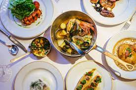

Francijas tradicionālā virtuve, kas nosacīti iedalās divās galvenajās nozarēs – reģionālajā tautas un izsmalcinātajā aristokrātiskajā. Reģionālā virtuve ietver ēdienus, ko gadsimtiem ilgi ir gatavojuši dažādu valsts vēsturisko reģionu iedzīvotāji. Aristokrātiskā franču virtuve veidojās Burbonu galmā, kad Parīze kļuva par pasaules modes tendenču noteicēju. Viņas unikālie ēdieni izcēlās ar daudzveidību un izsmalcinātību.
Tradicionālā franču maltīte var sākties ar hors d'oeuvre (karstās vai aukstās uzkodas pusdienās), kam seko zupa, tad pamatēdiens, salāti un siers. Maltīte beidzas ar desertu vai augļiem. Nozīmīga maltītes sastāvdaļa ir siers, kuru ir vairāk nekā 200 šķirņu.